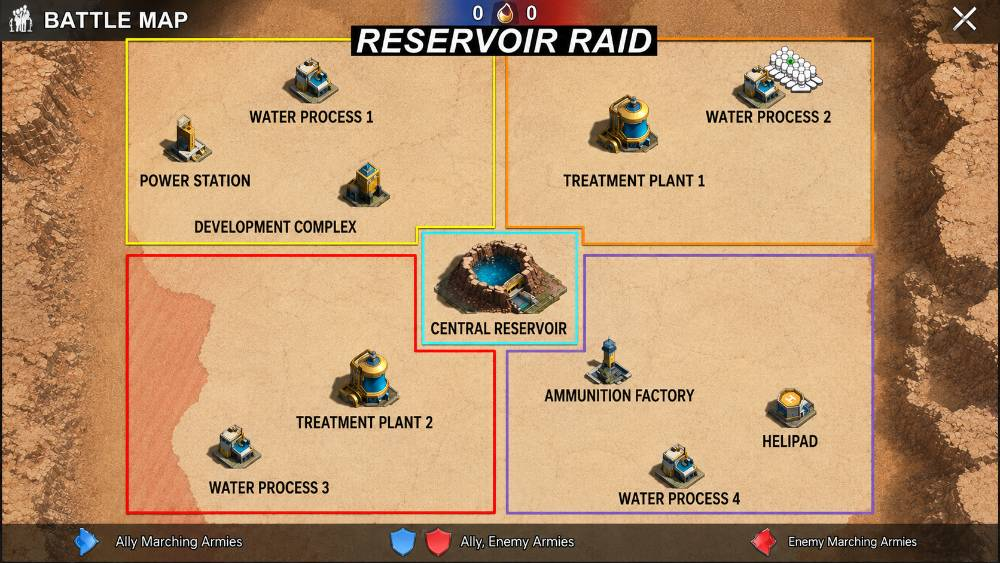

Das Wichtigste für neue Mitglieder — kurz und einfach. Willkommen im Team! 💪The most important things for new members — short and simple. Welcome to the team! 💪L'essentiel pour les nouveaux membres — court et simple. Bienvenue dans l'équipe ! 💪L'essenziale per i nuovi membri — breve e semplice. Benvenuto nella squadra! 💪Lo esencial para nuevos miembros — corto y sencillo. ¡Bienvenido al equipo! 💪Yeni üyeler için en önemlisi — kısa ve basit. Takıma hoş geldin! 💪Самое важное для новичков — коротко и просто. Добро пожаловать в команду! 💪
Bei Events immer den Chat lesen und die Gruppennachrichten von R4 beachten. Und das Wichtigste: FRAGEN, wenn etwas unklar ist! Immer fragen — hier hilft jeder gerne. 🙂Always read the chat during events and follow the R4 group messages. Most important of all: ASK when something is unclear! Always ask — everyone here is happy to help. 🙂Lis toujours le chat pendant les events et suis les messages de groupe des R4. Le plus important : DEMANDE si quelque chose n'est pas clair ! Demande toujours — ici, tout le monde aide volontiers. 🙂Leggi sempre la chat durante gli eventi e segui i messaggi di gruppo degli R4. La cosa più importante: CHIEDI se qualcosa non è chiaro! Chiedi sempre — qui tutti aiutano volentieri. 🙂Lee siempre el chat durante los eventos y sigue los mensajes de grupo de R4. Lo más importante: ¡PREGUNTA si algo no está claro! Pregunta siempre — aquí todos ayudan con gusto. 🙂Etkinliklerde her zaman sohbeti oku ve R4 grup mesajlarını takip et. En önemlisi: bir şey belirsizse SOR! Her zaman sor — burada herkes yardıma hazır. 🙂На событиях всегда читай чат и следи за групповыми сообщениями R4. Самое важное: СПРАШИВАЙ, если что-то непонятно! Всегда спрашивай — здесь все рады помочь. 🙂
Mit einigen Allianzen haben wir einen Nichtangriffspakt für bestimmte Areale. Diese Partner in den genannten Arealen NICHT angreifen — das ist absolut verbindlich. Wer dort einen NAP-Partner angreift, gefährdet die ganze Allianz.We have a non-aggression pact with some alliances for certain areas. Do NOT attack these partners in the listed areas — this is absolutely binding. Attacking a NAP partner there endangers the whole alliance.Nous avons un pacte de non-agression avec certaines alliances pour certaines zones. N'attaque PAS ces partenaires dans les zones indiquées — c'est absolument obligatoire. Y attaquer un partenaire NAP met en danger toute l'alliance.Abbiamo un patto di non aggressione con alcune alleanze per determinate aree. NON attaccare questi partner nelle aree indicate — è assolutamente vincolante. Attaccarvi un partner NAP mette in pericolo tutta l'alleanza.Tenemos un pacto de no agresión con algunas alianzas para ciertas áreas. NO ataques a estos socios en las áreas indicadas — es absolutamente obligatorio. Atacar allí a un socio del NAP pone en peligro a toda la alianza.Bazı ittifaklarla belirli bölgeler için saldırmazlık paktımız var. Bu ortaklara belirtilen bölgelerde saldırMA — bu kesinlikle bağlayıcı. Orada bir NAP ortağına saldıran tüm ittifakı tehlikeye atar.С некоторыми альянсами у нас пакт о ненападении для определённых зон. НЕ атакуй этих партнёров в указанных зонах — это абсолютно обязательно. Атака на партнёра по NAP там угрожает всему альянсу.
Aktuelle Partner & Areale:Current partners & areas:Partenaires & zones actuels :Partner & aree attuali:Socios y áreas actuales:Güncel ortaklar & bölgeler:Текущие партнёры и зоны:
[RUB] · [SPT] · [TAO] · [LSP] · [WPE] — die jeweils gültige Liste sagt dir R4 im Chat (ändert sich).— R4 tells you the currently valid list in the chat (it changes).— la liste valable, c'est R4 qui te la dit dans le chat (elle change).— la lista valida te la dice R4 in chat (cambia).— la lista vigente te la dice R4 en el chat (cambia).— geçerli listeyi R4 sohbette söyler (değişir).— актуальный список сообщает R4 в чате (меняется).
Betrifft:Applies to:Concerne :Riguarda:Se aplica a:Kapsar:Касается:
Minen · Basen · Trucks · ArenaMines · Bases · Trucks · ArenaMines · Bases · Trucks · ArèneMiniere · Basi · Trucks · ArenaMinas · Bases · Trucks · ArenaMadenler · Üsler · Trucks · ArenaШахты · Базы · Trucks · Arena
Wann:When:Quand :Quando:Cuándo:Ne zaman:Когда:
etwa jeden 2. Tag, ~19:20 DE (17:20 UTC).roughly every 2nd day, ~19:20 DE (17:20 UTC).environ tous les 2 jours, ~19:20 DE (17:20 UTC).circa ogni 2 giorni, ~19:20 DE (17:20 UTC).aproximadamente cada 2 días, ~19:20 DE (17:20 UTC).yaklaşık 2 günde bir, ~19:20 DE (17:20 UTC).примерно каждый 2-й день, ~19:20 DE (17:20 UTC).
🎯 Ziel:Goal:Objectif :Obiettivo:Objetivo:Hedef:Цель:
in 30 Min so viel persönlichen Schaden wie möglich → mehr Allianz-Schaden → bessere Belohnung.deal as much personal damage as possible in 30 min → higher alliance damage → better rewards.infliger le plus de dégâts personnels possible en 30 min → plus de dégâts d'alliance → meilleures récompenses.infliggi più danno personale possibile in 30 min → più danno dell'alleanza → ricompense migliori.inflige el mayor daño personal posible en 30 min → más daño de alianza → mejores recompensas.30 dakikada mümkün olduğunca çok kişisel hasar → daha fazla ittifak hasarı → daha iyi ödüller.за 30 мин нанести как можно больше личного урона → больше урона альянса → лучше награды.
⚔️ So greifen wir an:How we attack:Comment on attaque :Come attacchiamo:Cómo atacamos:Nasıl saldırırız:Как атакуем:
Boss per Rally angreifen — starte eine eigene Rally, dann fülle die anderen Rallys auf.attack the boss via Rally — start your own Rally, then fill up the other Rallys.attaque le boss via Rally — lance ta propre Rally, puis remplis les autres Rallys.attacca il boss con una Rally — avvia la tua Rally, poi riempi le altre Rally.ataca al jefe con Rally — inicia tu propia Rally, luego llena las demás Rallys.boss'a Rally ile saldır — kendi Rally'ni başlat, sonra diğer Rally'leri doldur.атакуй босса через Rally — начни свою Rally, затем заполняй остальные Rally.
Unbedingt anmelden, wenn du dabei sein willst — wir schaffen es jede Woche voll zu sein! Auch die Reserve ist wichtig. Kingeder schickt am Tag selbst die Einteilung. Wir spielen in Zonen (Team-Farben).Be sure to sign up if you want to join — we manage to be full every week! The reserve matters too. Kingeder sends the assignment on the day itself. We play in zones (team colors).Inscris-toi absolument si tu veux participer — on arrive à être complets chaque semaine ! La réserve compte aussi. Kingeder envoie la répartition le jour même. On joue par zones (couleurs d'équipe).Iscriviti assolutamente se vuoi partecipare — riusciamo a essere al completo ogni settimana! Anche la riserva conta. Kingeder invia la formazione il giorno stesso. Giochiamo a zone (colori squadra).Apúntate sin falta si quieres participar — ¡logramos estar completos cada semana! La reserva también importa. Kingeder envía el reparto el mismo día. Jugamos por zonas (colores de equipo).Katılmak istiyorsan mutlaka kayıt ol — her hafta dolu olmayı başarıyoruz! Yedek de önemli. Kingeder dizilimi o gün gönderir. Bölgeler (takım renkleri) halinde oynarız.Обязательно запишись, если хочешь участвовать — мы каждую неделю набираем полный состав! Резерв тоже важен. Kingeder присылает расстановку в тот же день. Играем по зонам (цвета команд).

Läuft genauso: Kingeder schickt die Strategie und die Einteilung — einfach beachten und mitmachen.Works the same way: Kingeder sends the strategy and the assignment — just follow it and take part.Ça marche pareil : Kingeder envoie la stratégie et la répartition — il suffit de suivre et de participer.Funziona allo stesso modo: Kingeder invia la strategia e la formazione — basta seguire e partecipare.Funciona igual: Kingeder envía la estrategia y el reparto — solo sigue y participa.Aynı şekilde: Kingeder stratejiyi ve dizilimi gönderir — uyup katıl.Так же: Kingeder присылает стратегию и расстановку — просто следуй и участвуй.
Wenn du länger als 1–2 Tage offline bist, gib bitte kurz Bescheid. Inaktive Spieler werden regelmäßig aus der Allianz entfernt — mit einer kurzen Nachricht bleibst du sicher dabei.If you're offline for more than 1–2 days, please let us know briefly. Inactive players are removed from the alliance regularly — a short message keeps your spot.Si tu es hors ligne plus de 1–2 jours, préviens-nous vite. Les joueurs inactifs sont retirés régulièrement de l'alliance — un petit message te garde ta place.Se sei offline per più di 1–2 giorni, avvisaci in breve. I giocatori inattivi vengono rimossi regolarmente dall'alleanza — un breve messaggio ti tiene il posto.Si estás offline más de 1–2 días, por favor avisa brevemente. A los jugadores inactivos se les quita de la alianza con regularidad — un mensaje corto te mantiene el lugar.Eğer 1–2 günden fazla offline olacaksan lütfen kısaca haber ver. İnaktif oyuncular düzenli olarak ittifaktan çıkarılır — kısa bir mesajla yerin güvende.Если будешь офлайн больше 1–2 дней, пожалуйста, сообщи коротко. Неактивных игроков регулярно удаляют из альянса — короткое сообщение сохранит твоё место.
Das Golden Window ist die Zeit, in der die Anforderungen vom Allianzduell (VS) und vom Rüstungswettlauf übereinstimmen (jeweils ein 4-Stunden-Fenster) — dann bekommst du die maximalen Belohnungen. Deshalb Ressourcen und Speedups genau hier einsetzen.The Golden Window is the time when the requirements of the Alliance Duel (VS) and the Power Play line up (a 4-hour window each) — that's when you get the maximum rewards. So use resources and speedups right here.Le Golden Window est le moment où les exigences de l'Alliance Duel (VS) et du Power Play coïncident (une fenêtre de 4 heures chacune) — c'est là que tu obtiens les récompenses maximales. Donc utilise ressources et speedups juste ici.Il Golden Window è il momento in cui i requisiti dell'Alliance Duel (VS) e del Power Play coincidono (una finestra di 4 ore ciascuna) — è allora che ottieni le ricompense massime. Quindi usa risorse e speedup proprio qui.El Golden Window es el momento en que coinciden los requisitos del Alliance Duel (VS) y del Power Play (una ventana de 4 horas cada uno) — ahí obtienes las recompensas máximas. Por eso usa recursos y speedups justo aquí.Golden Window, Alliance Duel (VS) ile Power Play gereksinimlerinin çakıştığı zamandır (her biri 4 saatlik pencere) — o zaman maksimum ödül alırsın. Bu yüzden kaynakları ve hızlandırıcıları tam burada kullan.Golden Window — это время, когда требования Alliance Duel (VS) и Power Play совпадают (по 4-часовому окну) — тогда ты получаешь максимальные награды. Поэтому трать ресурсы и ускорения именно здесь.
🎉 Herzlich willkommen in der [S1L]-Fam!🎉 A warm welcome to the [S1L] fam!🎉 Bienvenue dans la famille [S1L] !🎉 Un caloroso benvenuto nella family [S1L]!🎉 ¡Bienvenido a la familia [S1L]!🎉 [S1L] ailesine hoş geldin!🎉 Добро пожаловать в семью [S1L]!
🔑 Zugang zum Info-HubAccess to the info hubAccès au hub d'infosAccesso all'hub informazioniAcceso al hub de informaciónBilgi merkezine erişimДоступ к инфо-хабу
Alle Strategien, Zeiten und Vorlagen stehen im internen Hub. Für das Passwort:All strategies, times and templates are in the internal hub. For the password:Toutes les stratégies, horaires et modèles sont dans le hub interne. Pour le mot de passe :Tutte le strategie, gli orari e i modelli sono nell'hub interno. Per la password:Todas las estrategias, horarios y plantillas están en el hub interno. Para la contraseña:Tüm stratejiler, saatler ve şablonlar iç merkezde. Şifre için:Все стратегии, время и шаблоны — во внутреннем хабе. За паролем:
✉️ Schreib Jac im Spiel-Chat für den Zugang✉️ Message Jac in the game chat for access✉️ Écris à Jac dans le chat du jeu pour l'accès✉️ Scrivi a Jac nella chat di gioco per l'accesso✉️ Escribe a Jac en el chat del juego para el acceso✉️ Erişim için oyun sohbetinde Jac'a yaz✉️ Напиши Jac в игровом чате для доступа